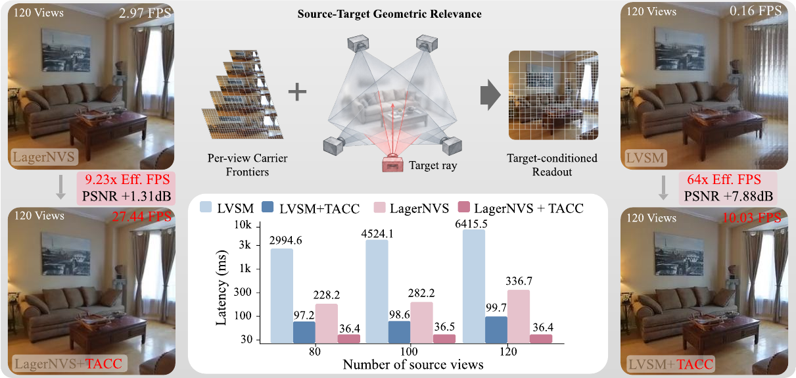
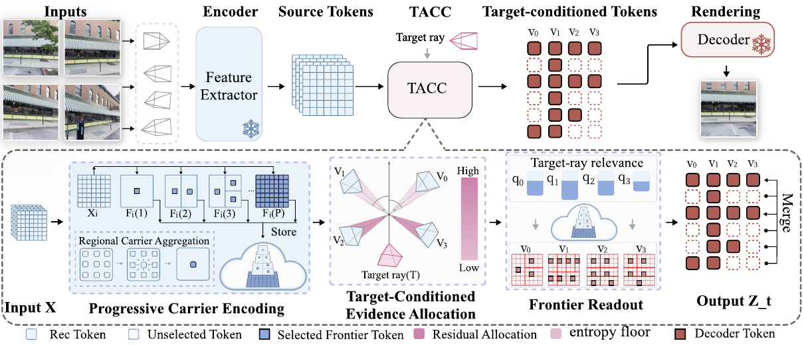
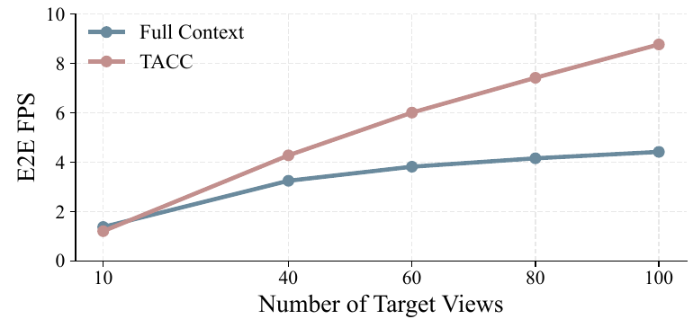

TL;DR
TACC decouples reusable source-side Carrier organization from target-conditioned evidence allocation for scalable feed-forward latent novel view synthesis.

Abstract
Feed-forward latent novel view synthesis (NVS) has recently emerged as a promising paradigm for direct inference from source images without per-scene optimization. However, its scalability is constrained by the growing scene-token context, which increases rendering latency and memory consumption as the number of source views grows. A natural solution is to compress the source context under a fixed rendering budget. Yet allocating this budget before the target camera is known is inherently target agnostic, even though different target views may rely on different source evidence. In this work, we introduce TACC, a target-aware compression framework that decouples reusable source-side organization from target-conditioned evidence allocation. TACC organizes each source view into a progressive Carrier hierarchy and, at target time, allocates a fixed token budget based on source-target geometric relevance to read the corresponding frontiers. The resulting tokens form a compact target-conditioned representation. Only the Carrier module is trained, while the pretrained NVS backbone remains frozen. Experiments spanning three NVS backbones and two datasets show that TACC consistently improves reconstruction quality over matched-budget compression baselines while maintaining stable target-time throughput as the number of source views increases, and achieves up to 64× higher target-time Effective FPS than frozen Full Context inference at 120 source views.
Method

TACC follows an encode once, allocate on demand principle. Before a target view is specified, TACC organizes each source-view representation into a progressive Carrier hierarchy that supports multiple readout granularities and can be reused across targets. At target time, TACC estimates source-target geometric relevance, preserves the highest-relevance source view at full granularity, and allocates the remaining token budget across the support views. It then reads the corresponding per-view frontiers and concatenates them into a compact target-conditioned representation that is passed to the unchanged rendering pathway.
Comparison Experiments
Within each setting, all methods use identical scene IDs and source/target view indices. Compressed methods are matched to the same decoder-visible token budget. Drag each vertical divider to compare the backbone and its TACC variant at the same frame.
LagerNVS on DL3DV
LVSM on RealEstate10K
CLiFT on DL3DV
Results on DL3DV with LagerNVS
Table 1: Main quantitative comparison on DL3DV with increasing source-view counts. Compression methods use a fixed A = 10 decoder-visible budget and identical source views within each setting; Full Context uses the complete LagerNVS representation. Color shading indicates the best and second-best reconstruction results.
| Method | 60 Source Views | 80 Source Views | 100 Source Views | |||||||||
|---|---|---|---|---|---|---|---|---|---|---|---|---|
| PSNR ↑ | SSIM ↑ | LPIPS ↓ | Eff. FPS ↑ | PSNR ↑ | SSIM ↑ | LPIPS ↓ | Eff. FPS ↑ | PSNR ↑ | SSIM ↑ | LPIPS ↓ | Eff. FPS ↑ | |
| LagerNVS-based | ||||||||||||
| Full Context | 26.2985 | 0.8247 | 0.0892 | 5.87 | 25.6766 | 0.8064 | 0.0963 | 4.40 | 25.2932 | 0.7953 | 0.1012 | 3.57 |
| ToMe | 20.5459 | 0.5706 | 0.3221 | 31.45 | 20.0344 | 0.5442 | 0.3548 | 31.43 | 19.7096 | 0.5304 | 0.3737 | 31.00 |
| DivPrune | 21.9794 | 0.6661 | 0.1984 | 30.99 | 21.7624 | 0.6560 | 0.2053 | 31.54 | 21.5944 | 0.6479 | 0.2106 | 31.07 |
| ZPressor | 24.2873 | 0.7768 | 0.1366 | 31.52 | 24.1568 | 0.7720 | 0.1381 | 31.26 | 24.0773 | 0.7684 | 0.1396 | 31.61 |
| Ours | 27.5815 | 0.8691 | 0.0792 | 28.02 | 27.3415 | 0.8649 | 0.0791 | 27.95 | 26.8787 | 0.8523 | 0.0833 | 28.12 |
Results on RealEstate10K
Table 2: RE10K comparison with increasing source-view counts. LagerNVS and LVSM Decoder-Only use matched source/target-view settings; compressed methods use a fixed A = 10 budget. Color shading indicates the best and second-best reconstruction results within each backbone. Eff. FPS is rounded to two decimals; speedups use unrounded target-time latency.
| Method | 80 Source Views | 100 Source Views | 120 Source Views | |||||||||
|---|---|---|---|---|---|---|---|---|---|---|---|---|
| PSNR ↑ | SSIM ↑ | LPIPS ↓ | Eff. FPS ↑ | PSNR ↑ | SSIM ↑ | LPIPS ↓ | Eff. FPS ↑ | PSNR ↑ | SSIM ↑ | LPIPS ↓ | Eff. FPS ↑ | |
| LagerNVS-based | ||||||||||||
| Full Context | 28.5991 | 0.9066 | 0.0681 | 4.38 | 28.0454 | 0.8976 | 0.0718 | 3.54 | 27.5702 | 0.8890 | 0.0754 | 2.97 |
| ToMe | 22.1035 | 0.7030 | 0.2889 | 31.51 | 21.8357 | 0.6915 | 0.3070 | 31.05 | 21.4481 | 0.6780 | 0.3276 | 31.50 |
| DivPrune | 25.1277 | 0.8298 | 0.1215 | 31.46 | 24.9600 | 0.8252 | 0.1240 | 31.42 | 24.8335 | 0.8217 | 0.1259 | 31.12 |
| ZPressor | 27.9540 | 0.8999 | 0.0854 | 31.28 | 27.7685 | 0.8961 | 0.0868 | 31.41 | 27.5760 | 0.8921 | 0.0882 | 31.20 |
| Ours | 30.2044 | 0.9285 | 0.0645 | 27.47 | 29.4752 | 0.9182 | 0.0681 | 27.42 | 28.8774 | 0.9090 | 0.0715 | 27.44 |
| LVSM Decoder-Only-based | ||||||||||||
| Full Context | 22.7867 | 0.7489 | 0.2134 | 0.33 | 22.4844 | 0.7364 | 0.2267 | 0.22 | 22.2624 | 0.7269 | 0.2375 | 0.16 |
| ToMe | 19.4181 | 0.5842 | 0.3874 | 11.25 | 19.1861 | 0.5698 | 0.4015 | 11.12 | 18.8588 | 0.5585 | 0.4182 | 11.34 |
| DivPrune | 20.3286 | 0.6110 | 0.3084 | 11.21 | 20.0773 | 0.5990 | 0.3233 | 11.29 | 19.9148 | 0.5911 | 0.3338 | 11.10 |
| ZPressor | 27.8870 | 0.8883 | 0.1047 | 11.17 | 27.8993 | 0.8885 | 0.1045 | 11.28 | 27.9235 | 0.8890 | 0.1041 | 11.25 |
| Ours | 30.2851 | 0.9260 | 0.0739 | 10.28 | 30.1978 | 0.9250 | 0.0744 | 10.15 | 30.1441 | 0.9243 | 0.0750 | 10.03 |
Results on DL3DV with CLiFT
Table 3: Comparison on CLiFT on DL3DV with increasing source-view counts. Compressed variants use a fixed A = 6 budget; Full Context uses the complete representation. Color shading indicates the best and second-best reconstruction results.
| Method | 24 Source Views | 36 Source Views | 48 Source Views | |||||||||
|---|---|---|---|---|---|---|---|---|---|---|---|---|
| PSNR ↑ | SSIM ↑ | LPIPS ↓ | Eff. FPS ↑ | PSNR ↑ | SSIM ↑ | LPIPS ↓ | Eff. FPS ↑ | PSNR ↑ | SSIM ↑ | LPIPS ↓ | Eff. FPS ↑ | |
| CLiFT-based | ||||||||||||
| Full Context | 20.1825 | 0.5962 | 0.2912 | 15.43 | 20.1843 | 0.5940 | 0.2992 | 10.64 | 20.1703 | 0.5930 | 0.3014 | 8.08 |
| Native | 19.9137 | 0.5764 | 0.3070 | 47.33 | 19.8713 | 0.5719 | 0.3137 | 47.46 | 19.8664 | 0.5718 | 0.3142 | 47.08 |
| ToMe | 19.4351 | 0.5367 | 0.3850 | 47.27 | 19.3258 | 0.5292 | 0.3963 | 47.19 | 18.7800 | 0.5031 | 0.4332 | 47.40 |
| DivPrune | 19.4529 | 0.5515 | 0.3264 | 47.21 | 19.3823 | 0.5437 | 0.3371 | 47.13 | 19.3468 | 0.5411 | 0.3407 | 47.09 |
| ZPressor | 20.9791 | 0.6344 | 0.2814 | 47.43 | 21.0250 | 0.6348 | 0.2825 | 47.43 | 20.9394 | 0.6307 | 0.2855 | 47.27 |
| Ours | 23.3425 | 0.7397 | 0.2180 | 46.37 | 23.5100 | 0.7441 | 0.2165 | 45.20 | 23.5842 | 0.7470 | 0.2149 | 43.18 |
Analysis Experiments
Amortized End-to-End Throughput

End-to-end throughput is measured over the complete model computation for each scene, excluding disk loading and image decoding. Source encoding is performed once per source set for both methods, while TACC additionally constructs the Carrier hierarchy once and reuses it across all subsequent target views. The one-time Carrier construction cost is not fully amortized at 10 target views, where TACC is slightly slower than Full Context. TACC overtakes Full Context by 40 target views; at 100 target views, TACC reaches 8.77 E2E FPS compared with 4.42 FPS for Full Context, corresponding to a 1.99× end-to-end speedup.
Memory Analysis under Dense Source Views
Table 12: Peak GPU memory at 120 source views on RE10K. Full Context and TACC are profiled under the same inference scope. TACC uses a fixed A = 10 decoder-visible budget.
| Backbone | Method | Peak Alloc. (GiB) ↓ | Reduction |
|---|---|---|---|
| LagerNVS | Full Context | 20.05 | – |
| TACC | 8.45 | 57.84% | |
| LVSM Decoder-Only | Full Context | 12.77 | – |
| TACC | 4.22 | 66.96% |
TACC reduces peak allocated GPU memory from 20.05 to 8.45 GiB on LagerNVS and from 12.77 to 4.22 GiB on LVSM Decoder-Only, corresponding to reductions of 57.84% and 66.96%, respectively. Under the same inference scope, TACC therefore reduces both target-time computation and peak allocated GPU memory in the dense-source-view setting.